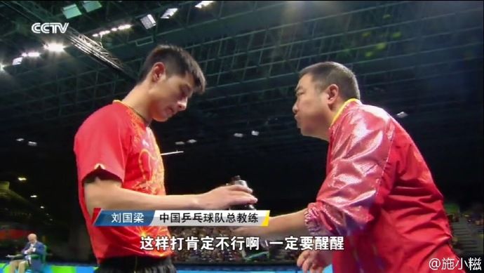
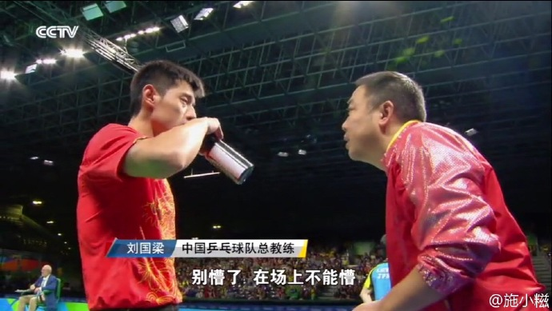
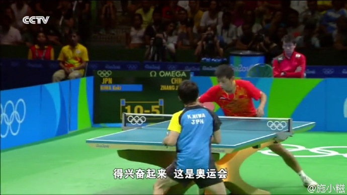
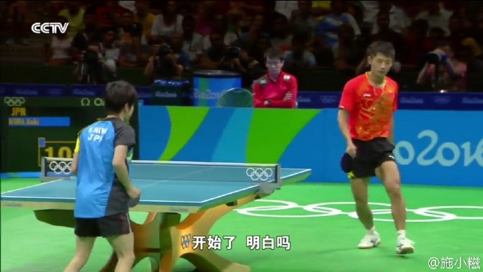

我的研究生生活终于开始了。经历了首次考研的失败和二战的成功，经历了几次实习的跌宕起伏，我最后踏上了这片一直憧憬向往的土地——上海。
以前总是自豪于自己的本科学习，毕竟学会了那么多数学，读懂了那么多艰难晦涩的讲义。然而因为自己不努力，虽然大三大四奋起直追，也没能够弥补大一大二的缺憾。这个锅只能够我自己背。即便如此，我仍然对自己的能力深信不疑。
我信心满满地联系上海的同学，想象着自己也能够在上海这个地方和他们互相切磋齐头并进，凭借自己的能力闯出一番事业时，我惊讶地发现自己错了，错的是那么离谱，那么可笑，就像是堂吉诃德自认为能战胜风车，挥舞着手中可笑的剑向之宣战一样。
打击的到来很快。第一次是复试时去上海会见以前的本科同学，当我们聊到计量经济学的课程时，他听了我的发言，若有所思，然后说，你以后就会学到，其实这些估计都是GMM的特例。无论他讲的对或错，当时的我甚至于现在的我对这个仍然是一头雾水。的确我学过这些，可是你还记得多少呢？我悲哀地发现，自己引以为豪的东西已经远远地被别人超过了，我这一年考研的确是荒废掉了，时间不会骗人，他总是通过各种方式对你进行宣战。至于以后的一些什么诸如同学结婚买房、同学有了稳定的工作等等，无一不是时间对我自己的鞭笞。可惜的是直到今天，我才真正读懂这一点。
第二次打击是高中同学给了一个胜寒的测试邀请和拉我去了一次胜寒会员的小型聚会。我本以为，自己通过这4年也积累了不少，能够和那些智商高一些的说上话，自己的智力水平也是可以的了。然而实践告诉我，没有这回事。想想我本科学习的时候，绞尽脑汁才学会一个东西，然而别人轻轻松松就会了，我这才明白，我的优势不是智力水平，而是勤奋。多么讽刺？这无疑是告诉我，根据自身的条件，我这辈子也不可能达到想要到达的水平了。以前我盼望成为科学家，本科学习经济以后想成为经济学家，为中国做一点小事，平时也是粪土当年万户侯，可是智力水平测试的结果出来的一刹那，我明白了，我不是这块料。我只有专心专注，才能弯道超车；只有潜心奋斗，才能苦难辉煌。我自问自己还盼望着睡懒觉，还盼望着考试突击，这能够成为一个合格的研究生吗？我对自己的研究生生活忐忑不安，心想着，不会我这一去财大，只是个给别人磨墨的小书童吧？
第三次打击如期而至。接触的人越多，越明白自己的地位。暑假之前给财大的直系前辈教授发了邮件，一句“你这是2年的硕士，你确定要和我一起做研究吗？”彻底把我憋了回去。同时，我的新室友有一位已经发表了文章出了书，他用的模型可以说已经深入了我所知道的计量层面，甚至隐隐有超过的迹象。与我同专业的人，有的是出国交流回来，有的是工作以后再考的研，论阅历和水平，我哪一点比得上他们？我这才明白自己是多么肤浅。我没有数模竞赛，没有论文没有一项拿得出手的研究，不知道怎样把所学的知识运用到实际研究中去。我什么都想知道，什么都学不精，这和项羽有什么区别？项羽最后乌江饮恨，其优柔寡断的性格与我相似，这是不是说明我只不过是运气好一些分配到了好的学校，而自己的能力是与其他人没啥区别的？我看差不多就是这样。
说话没有什么逻辑性，跳跃幅度也很大。唉，这就是我。
最近脸上开始长痘痘了，跑步也不想跑了，喝水也荒废了。至于慕课计算机课程的学习，也悄悄地停下了。我不知道自己要干什么，不知道该往哪里走。一切都陷入了迷茫。别人都在考CPA、CFA，语言类的也很多都考过了。我呢？我一个也没有，一个也不想学。为什么我对什么都不感兴趣了？为什么？我恨自己现在的样子。别人在图书馆自习的时候，我在寝室里担忧着自己摔了个角的新手机，我恨这样的生活。
我很矛盾。我觉得我有能力，但是智商低下的现实告诉我不是这样；我觉得我荒废了很多，可是我又是一副懒洋洋的样子。我到底在干什么呢？
从宿舍的阳台向外望去，是一条交叉的十字路口，四周是低矮的平房，远处是灰蒙蒙的天空。路上匆匆的人们，他们在想些什么，他们在为什么而奔波，也会有人向我一样迷茫吗？
我想起了大三的那个我。那样强度的学习对于别人来说可能是稀松平常，对于我来说却是拼尽全力。可是，我也坚持了那一学年不是吗？我选了全部的课，做了全部的作业，我甚至可以和大神谈笑风生，我的内心无所畏惧。什么打击？那一年我没有受到任何打击，我花费了所有的一切去弥补以前犯下的错误，我做到了，我做的很好，我还拿了奖学金。
这才是我想要的生活，这才是我想要的结果。
研究生开始了！赶紧的，兴奋起来啊！



